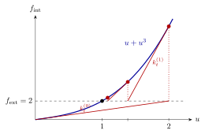
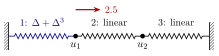
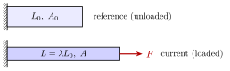
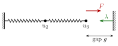

Lecture 6
Nonlinear Problems and Newton's Method
6.1 What “linear” meant, and three ways to lose it
Everything so far rested on one equation, \(\mathbf{K}\mathbf{u} = \mathbf{f}\), with a matrix \(\mathbf{K}\) that did not depend on the answer. Double the load, and the displacements double; solve two load cases, and their sum solves the summed load. This comfort was bought with three assumptions, made so quietly in Lecture 1 that they were easy to miss:
The material is linear: stress proportional to strain, however large.
Displacements are small: equilibrium may be written for the undeformed shape, and strain is the simple \(\mathrm{d}u/\mathrm{d}x\).
The boundary conditions are fixed in advance: we know beforehand which nodes are supported and which are free.
Give up any one and the problem becomes nonlinear. The three cases have names: material nonlinearity (rubber, plastic yielding, concrete cracking), geometric nonlinearity (cables, thin shells, anything that moves or rotates far), and contact (a gap that closes, a tyre on a road). Real problems often contain all three; a car crash certainly does.
What is lost is superposition, and with it the luxury of one linear solve. What is not lost — and this is the message of the lecture — is everything we know about linear problems, because the method for nonlinear problems is to solve a sequence of linear ones.
6.2 The new shape of the problem
Start, as always, with one spring — but a spring that stiffens as it stretches, \[f_{\mathrm{int}}(u) = k\,u + \beta\,u^3 .\] The subscript says internal force: what the spring answers when stretched by \(u\). Equilibrium still means that this answer balances the applied load. We write it as a residual, the out-of-balance force, which must vanish: \[r(u) = f_{\mathrm{int}}(u) - f_{\mathrm{ext}} = 0 . \tag{6.1}\]
There are two directions in which to read this equation, and they are very different in difficulty. Given \(u\), the force is found by evaluating a formula: trivial. Given the force, finding \(u\) means inverting the function \(f_{\mathrm{int}}\) — and here lies the whole difficulty of nonlinear analysis:
Key idea
A linear function is inverted by a division: \(u = f/k\). A nonlinear function, in general, has no inverse that can be written down. The few cases with a named inverse — \(x^2\) and the square root, \(e^x\) and the logarithm — are the exceptions that school has made familiar, not the rule; and for a system of many coupled nonlinear equations there is no hope at all. What we can always do is evaluate: the residual for a guessed \(u\), and its slope. Nonlinear solution methods are ways of turning evaluation into inversion, by iteration.
6.3 Newton’s method
Suppose we have a guess \(u^{(i)}\) that does not satisfy equilibrium: \(r(u^{(i)}) \ne 0\). Near the guess, replace the curve by its tangent — a straight line, and straight lines we can solve: \[r\bigl(u^{(i)} + \Delta u\bigr) \approx r\bigl(u^{(i)}\bigr) + k_t\,\Delta u = 0, \qquad k_t = \frac{\mathrm{d}f_{\mathrm{int}}}{\mathrm{d}u}\bigg|_{u^{(i)}} .\] The slope \(k_t\) is the tangent stiffness: the stiffness the structure shows to a small additional load in its current state. Solving the linearized equation gives the correction, and the procedure repeats: \[\boxed{\;k_t\,\Delta u = -\,r\bigl(u^{(i)}\bigr), \qquad u^{(i+1)} = u^{(i)} + \Delta u .\;} \tag{6.2}\] Look at the first equation: stiffness times displacement equals force. Each Newton iteration is a linear spring problem from Lecture 1, with the tangent stiffness as the spring and the out-of-balance force as the load (Fig. 6.1).

By hand.
Take \(k = \beta = 1\) and \(f_{\mathrm{ext}} = 2\), so that we solve \(u + u^3 = 2\); the answer is \(u = 1\), which lets us watch the error. Then \(r = u + u^3 - 2\) and \(k_t = 1 + 3u^2\). Starting from the unloaded state: \[\begin{array}{c|cccccc} \text{iteration} & 0 & 1 & 2 & 3 & 4 & 5\\\hline u & 0 & 2 & 1.3846 & 1.0826 & 1.0048 & 1.00002\\ r(u) & -2 & 8 & 2.039 & 0.351 & 0.019 & 0.00007\\ k_t & 1 & 13 & 6.75 & 4.52 & 4.03 & 4.00\\ \text{error} & 1 & 1 & 0.38 & 0.083 & 0.0048 & 0.00002 \end{array}\] The first step is the linear solution, \(u = f/k = 2\) — a poor guess, because the spring is much stiffer out there. But watch the last three errors: \(0.083\), \(0.0048\), \(0.00002\). Once close, each iteration roughly squares the error; the number of correct digits doubles. This quadratic convergence is the signature of Newton’s method and the reason it dominates nonlinear computation. In practice one stops when the residual is small compared with the applied load.
Remark
A digression: square roots without a square-root key. Even the “named” inverses are computed this way. To find \(\sqrt a\), solve \(r(x) = x^2 - a = 0\) by Newton: the slope is \(2x\), so \(x \leftarrow x - (x^2-a)/(2x)\), that is \[x \;\leftarrow\; \tfrac12\Bigl(x + \frac{a}{x}\Bigr) :\] average your guess with \(a\) divided by your guess. For \(\sqrt2\), starting from \(1\): \(\;1,\ 1.5,\ 1.41667,\ 1.4142157,\ 1.4142135624\) — ten correct digits after four steps, using nothing but division and averaging. The rule was known in Babylon; a pocket calculator does essentially the same.
6.4 Load steps
Newton’s method converges fast near the solution; from far away it may wander or fail. The remedy is as simple as it is useful: do not apply the whole load at once. Apply it in increments — ten percent, twenty, thirty — and at each level iterate to equilibrium, starting from the converged state of the level before, which is already close. This is the stepping idea of Lecture 5 with the load level playing the role of time. It also yields what an engineer usually wants anyway: not one point but the whole load–displacement curve.
Remark
Computing and factorizing a new tangent in every iteration is the expensive part for large models. Modified Newton keeps the tangent of an earlier iteration for a while: each iteration becomes cheap, at the price of more iterations (the convergence is no longer quadratic) — or, if the true stiffness has grown well beyond the frozen one, no convergence at all. Which is faster depends on the problem.
6.5 Several degrees of freedom
With several nodes everything becomes a vector or a matrix, by the assembly of Lecture 1 — with one change of habit. In a linear problem we assembled the stiffness matrix and never looked at element forces until post-processing. Now the element forces come first:
The internal force vector \(\mathbf{f}_{\mathrm{int}}(\mathbf{u})\) is assembled from the elements: each spring, stretched by its current elongation \(\Delta\), carries the force \(N(\Delta)\); it adds \(-N\) to the entry of its first node and \(+N\) to that of its second. (\(\mathbf{f}_{\mathrm{int}}\) is the force the nodes must apply to hold the spring stretched — the opposite of the spring’s pull on them.)
The residual is \(\mathbf{r}(\mathbf{u}) = \mathbf{f}_{\mathrm{int}}(\mathbf{u}) - \mathbf{f}_{\mathrm{ext}}\), one out-of-balance force per degree of freedom.
The tangent stiffness matrix \(\mathbf{K}_T\) is assembled from the element tangents \(k_t^e\left[\begin{smallmatrix}1&-1\\-1&1\end{smallmatrix}\right]\) with \(k_t^e = \mathrm{d}N/\mathrm{d}\Delta\) at the element’s current elongation — the assembly rule of Lecture 1, with current stiffnesses.
Newton: solve \(\mathbf{K}_T\,\Delta\mathbf{u} = -\mathbf{r}\), update \(\mathbf{u} \leftarrow \mathbf{u} + \Delta\mathbf{u}\), repeat.
Worked example.
Three springs in a row between two walls, two free nodes (Fig. 6.2). Spring 1 stiffens, \(N_1 = \Delta + \Delta^3\); springs 2 and 3 are linear with \(k = 1\). A force \(2.5\) acts on node 1. This structure is statically indeterminate — how the load divides between the left and the right path depends on the stiffnesses, which depend on the answer — so there is no shortcut.

With elongations \(\Delta_1 = u_1\), \(\Delta_2 = u_2-u_1\), \(\Delta_3 = -u_2\): \[\mathbf{f}_{\mathrm{int}} = \begin{bmatrix} N_1 - N_2\\ N_2 - N_3\end{bmatrix} = \begin{bmatrix} u_1 + u_1^3 - (u_2-u_1)\\ (u_2 - u_1) + u_2 \end{bmatrix}, \qquad \mathbf{K}_T = \begin{bmatrix} (1 + 3u_1^2) + 1 & -1\\ -1 & 2\end{bmatrix}.\] Only one entry of \(\mathbf{K}_T\) changes during the iteration: the one fed by the nonlinear element. Newton from \(\mathbf{u} = \mathbf{0}\): \[\begin{array}{c|ccccc} \text{iteration} & 0 & 1 & 2 & 3 & 4\\\hline u_1 & 0 & 1.6667 & 1.1959 & 1.0225 & 1.0003\\ u_2 & 0 & 0.8333 & 0.5979 & 0.5112 & 0.5002\\ r_1 & -2.5 & 4.630 & 1.004 & 0.103 & 0.0015\\ k_t \text{ of spring 1} & 1 & 9.33 & 5.29 & 4.14 & 4.00\\ N_1 & 0 & 6.30 & 2.91 & 2.09 & 2.00 \end{array}\] It converges to \(\mathbf{u} = (1,\ 0.5)\). Read the physics off the last row: spring 1 ends up carrying \(N_1 = 2\) of the \(2.5\), and springs 2 and 3 only \(0.5\). The linear solution (iteration 1) would have predicted a displacement of \(1.67\) and a share of \(1.67\) for spring 1. The stiffening spring attracts load — a redistribution that no linear analysis, however fine its mesh, can show.
6.6 Material nonlinearity in a bar
For a bar element the nonlinear spring has a name: the material’s stress–strain curve \(\sigma(\varepsilon)\). The element force is \(N = A\,\sigma(\varepsilon)\) with \(\varepsilon= \Delta/h\), and the element tangent is \[k_t^e = \frac{E_t\,A}{h}, \qquad E_t = \frac{\mathrm{d}\sigma}{\mathrm{d}\varepsilon},\] the familiar \(EA/h\) with the tangent modulus in place of Young’s modulus. Nothing else in Section 6.5 changes. (Supplement S2 in Part IV runs exactly this Newton loop with a stress–strain law learned from data.)
One warning for later study. A rubber band follows the same curve when unloaded: it is nonlinear but elastic. A steel bar stretched beyond yield does not: on unloading it follows a different, steeper path and stays permanently longer. Its stress depends not only on the current strain but on the history of straining. That is plasticity; the Newton loop survives, but the material law needs memory, and that is a subject of its own.
6.7 Large deformations: which strain, which stress?
When deformations are no longer small, the innocent definitions of Lecture 2 split into several, and it matters which one is meant. One bar is enough to see everything. It has length \(L_0\) and cross-section \(A_0\) before loading, and \(L\) and \(A\) under the force \(F\) (Fig. 6.3). Its stretch is \(\lambda = L/L_0\).

Strain.
All of the following measure the same deformation: \[\varepsilon_{\mathrm{eng}} = \frac{L-L_0}{L_0} = \lambda - 1, \qquad \varepsilon_{\mathrm{G}} = \frac{L^2 - L_0^2}{2L_0^2} = \tfrac12(\lambda^2-1), \qquad \varepsilon_{\ln} = \ln\frac{L}{L_0} = \ln\lambda .\] The engineering strain refers the elongation to the original length. The Green–Lagrange strain compares squared lengths — which sounds odd but is what makes it insensitive to rigid rotation in 2D and 3D, and why large-displacement finite element formulations favour it. The logarithmic (true) strain adds up small elongations, each referred to the current length.
Stress.
The same force can be divided by different areas: \[\begin{align*} P &= \frac{F}{A_0} && \text{nominal (engineering) stress,}\\ \sigma &= \frac{F}{A} && \text{true (Cauchy) stress,}\\ S &= \frac{P}{\lambda} && \text{second Piola--Kirchhoff stress.} \end{align*}\] The nominal stress is what a tensile test reports (force over the original area); the true stress is what the material actually feels; \(S\) has no direct physical picture — it is the partner that the Green–Lagrange strain requires, as we see next.
A number.
Stretch a rubber-like bar to \(\lambda = 1.5\) with a nominal stress \(P = 100\) MPa. Rubber keeps its volume, so \(A = A_0/\lambda\). Then:
| engineering / nominal | Green–Lagrange / 2nd P.–K. | logarithmic / true | |
|---|---|---|---|
| strain | \(0.500\) | \(0.625\) | \(0.405\) |
| stress | \(100\) MPa | \(66.7\) MPa | \(150\) MPa |
Three honest answers to “what is the strain?” and “what is the stress?”, with stresses differing by more than a factor of two. For the small strains of the earlier lectures — say \(\lambda = 1.001\) — all three strains are \(0.001\) and all three stresses agree to within a few tenths of a percent, which is why we never had to choose.
Conjugate pairs, again.
The measures cannot be combined at will. In Lecture 1, force and displacement were partners because their product is work. The same test sorts stresses and strains. The work done on the bar per unit of original volume, for a small increase of stretch, is \(P\,\mathrm{d}\lambda\) (force \(F = PA_0\) times \(\mathrm{d}L = L_0\,\mathrm{d}\lambda\), divided by \(A_0L_0\)). Now check the other two pairs: \[S\,\mathrm{d}\varepsilon_{\mathrm{G}} = \frac{P}{\lambda}\cdot\lambda\,\mathrm{d}\lambda = P\,\mathrm{d}\lambda, \qquad \sigma\,\mathrm{d}\varepsilon_{\ln} = \lambda P\cdot\frac{\mathrm{d}\lambda}{\lambda} = P\,\mathrm{d}\lambda .\] (The last uses the constant volume; in general a factor \(A L/(A_0 L_0)\) appears.) Each column of the table is a work-conjugate pair: the same work, three ways to split it into a stress and a strain.
Key idea
At large deformation, “stress” and “strain” are not single quantities but families — and a stress measure must be used with its strain measure. A material law fitted as true stress against logarithmic strain gives wrong forces if evaluated with engineering strain. When reading a material data sheet or a solver manual, the first question is: which pair?
Remark
Geometric nonlinearity proper — equilibrium written for the deformed shape, structures that snap through or buckle, loads that can no longer be increased — needs one more idea than this lecture has room for: the tangent stiffness acquires a part that depends on the forces already in the structure, and it can become zero. That is left for a planned later lecture (not yet part of these notes), built on a shallow truss of two bars.
6.8 Contact: a constraint that switches on
The third nonlinearity is the strangest, because every piece of it is linear. Take the two-spring chain of Lecture 1 (\(k_1 = k_2 = 1\), node 1 fixed; we keep the numbering of Lecture 1, so the free nodes are 2 and 3) and put a rigid stop at a distance \(g = 4\) in front of the last node (Fig. 6.4). A force \(F\) pushes that node toward the stop.

The stop imposes two conditions that cannot be written as equations: the node cannot pass through, \(u_3 \le g\); and the stop can only push, not pull, \(\lambda \ge 0\). Moreover, either there is a gap and no force, or there is a force and no gap: \[u_3 \le g, \qquad \lambda \ge 0, \qquad \lambda\,(g - u_3) = 0 .\] Compare with the rule of Lecture 1: at every degree of freedom, either the displacement is prescribed and the force unknown, or the reverse. That rule still holds here. What is new is that we do not know in advance which of the two cases applies — it depends on the solution. That is the nonlinearity, even though each case by itself is linear.
Try without contact.
For \(F = 3\), the free chain gives \(u_2 = 3\), \(u_3 = 6\): the node would sit two units inside the stop. So the contact is active, and \(u_3 = g = 4\) must be enforced. There are two standard ways. (Readers of Lecture B will recognize the two strategies that Lecture B calls persuasion and construction.)
Way 1: the penalty method.
Replace the rigid stop by a very stiff spring \(k_p\) that acts only when the node penetrates. For an active contact this adds \(k_p\) to the stiffness and \(k_p\,g\) to the load of node 3: \[\begin{bmatrix} 2 & -1\\ -1 & 1 + k_p\end{bmatrix} \begin{bmatrix} u_2\\ u_3\end{bmatrix} = \begin{bmatrix} 0\\ F + k_p\,g\end{bmatrix} \quad\xrightarrow{\;k_p = 100\;}\quad u_2 = 2.005,\quad u_3 = 4.010 .\] The node penetrates the stop by \(0.00995 \approx 0.01\), and the contact force is \(k_p\times 0.00995 = 0.995\). Simple — the system keeps its size and its character — but approximate: a larger \(k_p\) reduces the penetration and makes the matrix worse conditioned. The engineer chooses.
Way 2: a Lagrange multiplier.
Enforce \(u_3 = g\) exactly, and make the unknown contact force \(\lambda\) an unknown of the system (\(\lambda\) now denotes this force, not the stretch of Section 6.7). The stop pushes node 3 back, so \(\lambda\) enters the equilibrium of node 3; and the constraint itself becomes an additional equation: \[\underbrace{\begin{bmatrix} 2 & -1 & 0\\ -1 & 1 & 1\\ 0 & 1 & 0 \end{bmatrix}}_{\begin{bmatrix}\mathbf{K} & \mathbf{B}^{\mathsf{T}}\\ \mathbf{B} & \mathbf{0}\end{bmatrix}} \begin{bmatrix} u_2\\ u_3\\ \lambda\end{bmatrix} = \begin{bmatrix} 0\\ F\\ g\end{bmatrix} = \begin{bmatrix} 0\\ 3\\ 4\end{bmatrix}. \tag{6.3}\] The third row says \(u_3 = 4\). The first then gives \(u_2 = 2\), and the second \(-2 + 4 + \lambda = 3\), hence \[u_2 = 2, \qquad u_3 = 4, \qquad \lambda = 1 .\] No penetration, and the contact force comes out exactly: of the load \(3\), the springs carry \(2\) and the stop carries \(1\). The penalty answer (\(0.995\)) was heading there.
Key idea
The Lagrange multiplier is the force that enforces the constraint. It is the conjugate partner of the constrained displacement — the reaction force of Lecture 1, promoted from a quantity recovered afterwards to an unknown of the system. In general: constraints \(\mathbf{B}\mathbf{u} = \mathbf{g}\) are enforced exactly by the enlarged system in (6.3), with one multiplier per constraint.
Two prices are paid. The system grows by one unknown per constraint; and it has a zero on its diagonal — it no longer describes the minimum of an energy but a minimum subject to a condition (mathematicians call it a saddle point), and solvers must be prepared for that.
And when is the constraint active?
The sign of the multiplier answers. Repeat with \(F = 1.5\). The free solution is \(u_3 = 3 < g\): no contact, done. Had we imposed the constraint anyway, (6.3) would return \(\lambda = -0.5\): the stop would have to pull the node toward itself, which a stop cannot do. A negative multiplier means: release this constraint. Contact algorithms are loops of exactly this kind — assume a set of active contacts, solve, release those with \(\lambda < 0\), add those that penetrate, repeat until nothing changes.
6.9 The recipe, extended
The nonlinear recipe
Choose a load level (a fraction of the total load).
From the current displacements, compute element by element the internal forces and the element tangents; assemble \(\mathbf{f}_{\mathrm{int}}\) and \(\mathbf{K}_T\).
Residual: \(\mathbf{r} = \mathbf{f}_{\mathrm{int}} - \mathbf{f}_{\mathrm{ext}}\). If it is small compared with the load: converged; go to the next load level.
Otherwise solve the linear problem \(\mathbf{K}_T\,\Delta\mathbf{u} = -\mathbf{r}\) (boundary conditions as in Lecture 1), update \(\mathbf{u} \leftarrow \mathbf{u} + \Delta\mathbf{u}\), and return to step 2.
With contact: after convergence, check the signs of the contact forces and the gaps; change the set of active contacts if necessary and iterate again.
Steps 2 and 4 are the linear finite element method, untouched: element contributions, assembly, boundary conditions, a linear solve. Nonlinear analysis does not replace that machinery; it calls it, again and again.
| linear | nonlinear |
|---|---|
| \(\mathbf{K}\mathbf{u} = \mathbf{f}\) | \(\mathbf{f}_{\mathrm{int}}(\mathbf{u}) = \mathbf{f}_{\mathrm{ext}}\) |
| stiffness matrix, constant | tangent stiffness, recomputed |
| one solve | load steps, each with Newton iterations |
| superposition of load cases | every load combination is a new analysis |
| element forces in post-processing | element forces in every iteration |
| supports known beforehand | contact found as part of the solution |
| one strain, one stress | conjugate pairs, to be chosen consistently |
| a solution always exists | a solution may be lost, or not unique |
Companion exercise: Exercise 6
Notebook Exercise_6_Nonlinear.ipynb: you build the solver of this lecture — Newton’s method, assembly of internal forces and tangent stiffness for springs with arbitrary laws, load steps — and use it to check a tangent against finite differences, see what a wrong tangent does to convergence, pass a maximum load under displacement control, and solve contact with a Lagrange multiplier and an active-set loop.
Looking ahead
The last row deserves a remark. Newton’s method divides by the tangent stiffness, and we have quietly assumed that it stays positive. Push a shallow arch downward and its tangent stiffness falls to zero: the structure can carry no more, snaps through, and a method that raises the load step by step has nowhere to go. Following a structure through such points — and predicting them, as buckling loads — is where nonlinear analysis becomes an art, and the subject of a planned later lecture (not yet part of these notes) built on a shallow truss of two bars.